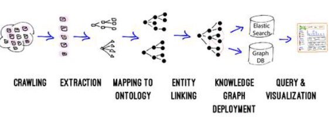
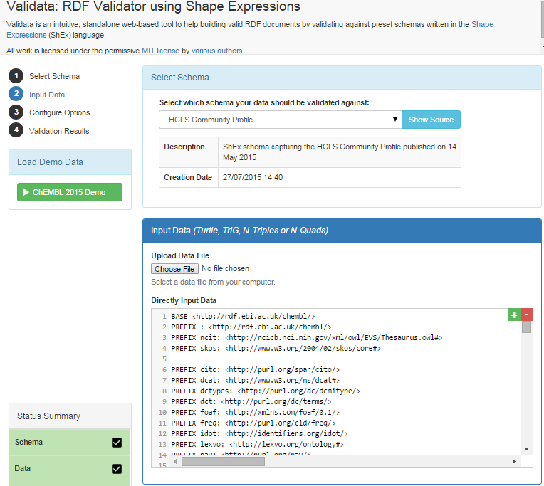
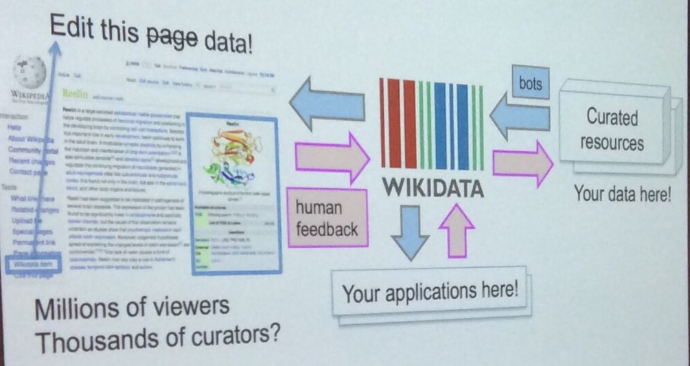
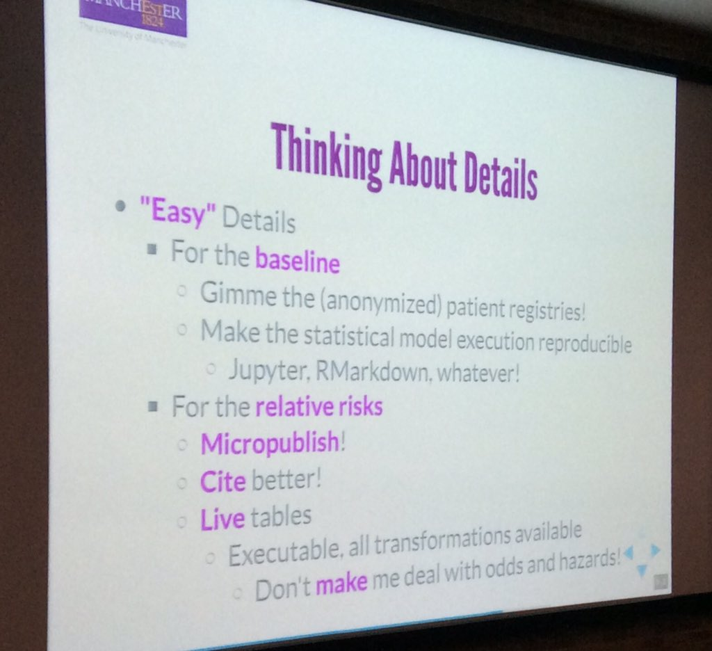
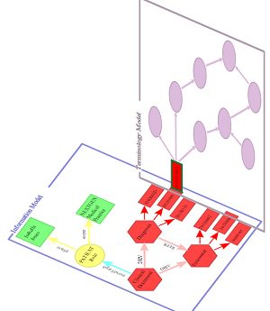
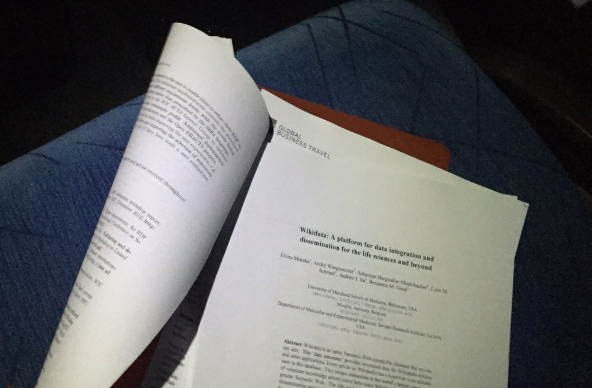

December 2015
I'm impressed so far by the 1st MOOC in @DSI_Columbia's XSeries on @edXOnline Data Science and Analytics in Context dx.org/xseries/data-s…
@cdsouthan @bengoldacre @opentrials @OKFN Key person: Olivier Bodenreider behind both ct.gov, MeSH lhncbc.nlm.nih.gov/personnel/oliv…
@bengoldacre @cdsouthan @opentrials @OKFN ct.gov, and trial sponsors (!), "from strings to things" lists.w3.org/Archives/Publi…
"Metadata-on-use: emergent, contextual information that arises naturally when data is assessed and analyzed for use" conferences.oreilly.com/strata/big-dat…
"Metadata can be used to develop a governance policy that is based on consensus and collective intelligence." oreilly.com/ideas/we-need-…
#iswc2015 best applied paper @szeke et al: On #jsonld @elastic @schemaorg_dev videolectures.net/iswc2015_szeke… HT: @rdmpage

"Predicting the Co-Evolution of Event and Knowledge Graphs" <- some interesting clinical research ideas outlined arxiv.org/pdf/1512.06900…
What about #jsonld? See how @Google KnowledgeGraph API uses it developers.google.com/knowledge-grap… twitter.com/nordicapis/sta…
Thx @520507 for sharing your notes from #ds101x #DataScience MOOC and for kind words about my blog twitter.com/520507/status/…
Linked "Things" is really what Linked "Data" is about. URIs/IRIs can break silos cc: @rikardlinde @davewiner twitter.com/plannero/statu…
Cool, OMOP (now @OHDSI) described in the 2nd week of @edXOnline @Columbia's MOOC: Statistical Thinking for #DataScience & Analytics #ds101x
Post-Doc in Informatics, Skövde AI Lab (SAIL), joint project with @AstraZenecaSE and @RecordedFuture his.se/en/about-us/Jo… Deadline 20 Jan
Post-Doc in Informatics, forecasting of emergent technologies with a special focus on the biopharmaceutical domain his.se/en/about-us/Jo…
The European Institute For Innovation Through Health Data. Inaugural Conference March 10 2016, Paris i-hd.eu
Rya: cloud-based RDF triple store, built on top of @ApacheAccumulo, that supports SPARQL queries wiki.apache.org/incubator/RyaP… via @bobdc
Finally, I've started to read TheBook: The Phoenix Project: A Novel about IT, DevOps, ... amazon.com/dp/0988262592/…
"We have recognised that huge value is lost by scientists taking their datasets to the grave with them." twitter.com/statsguyuk/sta…
"what is not transparent is assumed to be wrong, corrupt, or biased until proved otherwise" twitter.com/statsguyuk/sta…
Semantic Technology 101 for Pharma, PhUSE CSS workshop with @NovasTaylor @MarcJAndersen phusewiki.org/docs/2015Webin… <- this looks awesome
Earlier this week I met two of my favorite researchers: @ontowonka and @CaroleAnneGoble See Carole's recent slides slideshare.net/carolegoble/cr…
Best #swat4ls paper: @wikidata: A platform for data integration and
dissemination for the life sciences and beyond swat4ls.org/wp-content/upl…
dissemination for the life sciences and beyond swat4ls.org/wp-content/upl…
Nice demo @gray_alasdair of Validata w3.org/2015/03/ShExVa… Remember when this started in #swat4ls 2013 hackathon

Agree. I wrote a blog about this 2 years ago kerfors.blogspot.nl/2013/11/de-ide… Recommend following @wilbanks #swat4ls twitter.com/hconstandt/sta…
The Uberon integrated cross-species ontology uberon.github.io/Uberon highlighted by @ontowonka over dinner and now in her #swat4ls keynote
Putting Data and Ontologies together using a @neo4j backed ontology store github.com/SciGraph/SciGr… --@ontowonka's #swat4ls keynote
The presentation from @cochranecollab / @datalanguage PICO Annotator/Finder nicely relates to @bparsia's keynote twitter.com/jamesmalone/st…
Plug by@hconstandt on #sawt4ls hackathon. Last year's hack has evolved into DISQOVER features. Hackathon tomorrow swat4ls.org/workshops/camb…
Links to companies and tools presented this morning #SWAT4LS Industry stream kerfors.blogspot.se/2015/12/swat4l…
Short blog post kerfors.blogspot.se/2015/12/swat4l… preparing for tomorrow's task to be the chair for the industry stream in #SWAT4LS
Updated storify.com/kerfors/swat4l… with some of the highlights from the first #swat4ls conference day, Thx @CMWallberg for the nice picture.
Nice #swat4ls demo by @simonjupp ebi.ac.uk/efo/webulous/ for collaborative ontology development using Google Docs twitter.com/egonwillighage…
Lots of interesting technologies being used behind the nice APIs ebi.ac.uk/ols/beta/docs/… : BioSolr, Neo4j, HAL twitter.com/egonwillighage…
"Tawny-OWL is like R for ontologies" I think that is what @phillord just said. I will look at the #swat4ls tutorial github.com/phillord/tawny…
Interesting lightweight use of git and Excel collaborative mapping effort with Roche on GO terms mentioned #swat4ls swat4ls.org/wp-content/upl…
Nice @wikidata #swat4ls talk by Elvira Mitaka. "Edit this data" instead of "Edit this page"

Bijan from @csmcr giving his #swat4ls keynote on representing all medical knowledge - Thinking About Details

NanoText It sounds as another interesting #swat4ls poster. Useful for our internal annotations of clinical trials
I'll checkout the @GraphScope #swat4ls poster - keyword search in the front of SPARQL sounds interesting
Due to #ukacnetworkattack at #swat4ls and editing @Storify not working on my iPad I'll update storify.com/kerfors/swat4l… tonight
Nice presentation w3id.org/vacseen next step on vaccine adverse events also sounds interesting #swat4ls twitter.com/nimonika/statu…
And the BIM Biomedical Image Ontology sites.google.com/site/bimontolo… #swat4ls twitter.com/egonwillighage…
ShEx (Shape Expressions) w3.org/2001/sw/wiki/S… I'm thinking of Swedish pronunciation for Cracker: Kex or käx ([kɛks] or [ɕɛks]) #swat4ls
"Facts about documents about the world, not the facts about the world" - Harold Solbrig about MESH #swat4ls tutorial
Nice list of different types of Terminological Resources by Harold Solbrig w3.org/2015/Talks/120… #swat4ls tutorial
Nice way to illustrate information model related to terminology model in #swat4ls tutorial w3.org/2015/Talks/120…

Eric's slides in the #swat4ls tutorial on Semantic Representations of Clinical Care and Clinical Trial Data w3.org/2015/Talks/120…
Cool: @sebotic show us @wikidata's API JSON, data types, bots to do mass data imports etc. in the #swat4ls tutorial
I'm live blogging the coming three days using @Storify from the #swat4ls conference in Cambridge, UK kerfors.blogspot.se/2015/12/swat4l…
Rainy Sunday afternoon watching talks about @opentrials from @bengoldacre youtu.be/ngVYptGuK0E and @rufuspollock youtu.be/NWTrmFUchA4
Thanks for Armando for the pointer to the BFO Ontologies book.mitpress.mit.edu/building-ontol… Finally I have ordered it twitter.com/nomini/status/…
Building a repository of biomedical ontologies with @neo4j slideshare.net/thesimonjupp/b… I look forward to talk with @simonjupp at #swat4ls
@CMWallberg Magnus, checkout my updated blog post for a couple kerfors.blogspot.se/2015/12/swat4l… - see you in Cambridge :)
Very nice update of 5-star Open Data Kudos to @echo4ngel and to @mhausenblas for the first version #LinkedData 5stardata.info/en/
On my to read list: New blog post by @swhume about @cdiscSHARE mungingmetadata.blogspot.se/2015/11/share-…
Spend two evenings revisiting my blog posts kerfors.blogspot.se as my images got lost between Blogger-Picasa-Google photo.
Updated my blog post in preparation for the #SWAT4LS conference next week kerfors.blogspot.se/2015/12/swat4l…
Reading #swat4ls papers on the bus home. Impressed! Looking forward to next week swat4ls.org/workshops/camb…

Looking forward to Barry Smith (BFO) presenting at the next PhUSE Semantic Technology meeting. twitter.com/nomini/status/…